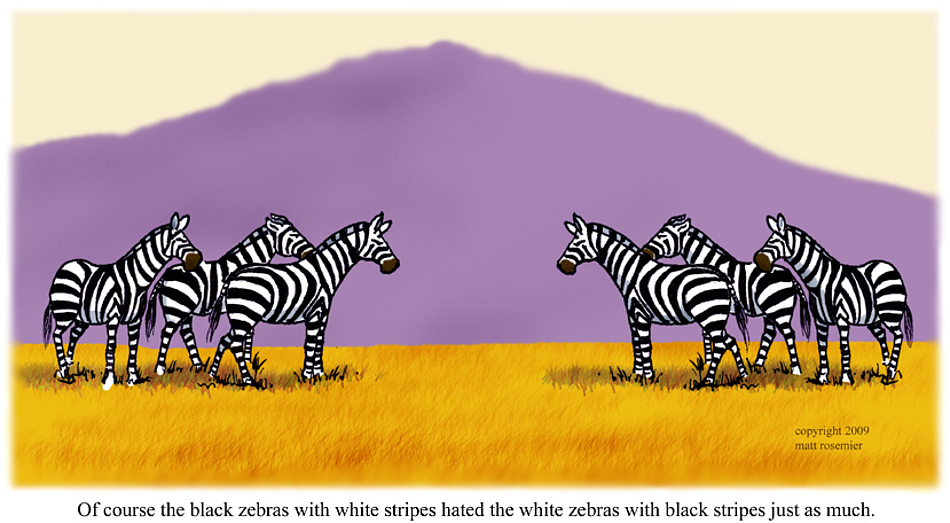
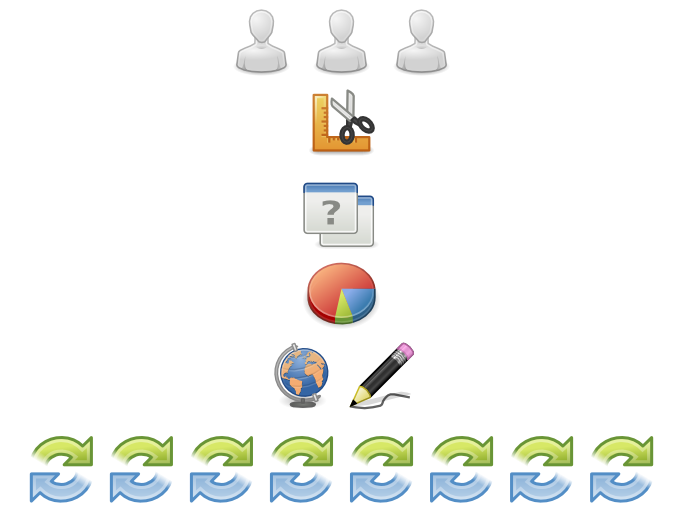
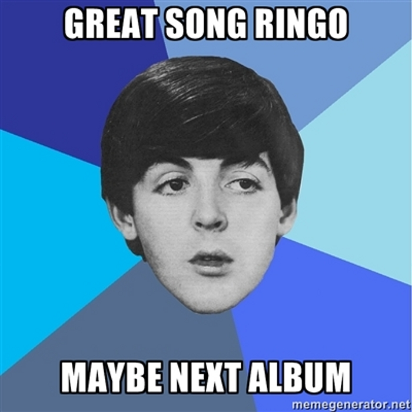

this talk
- persisiting? relations…?
- time?? space???
- W the actual F?
this talk
- persistence is what we need for our objects
- relations are tricky things to model
- different spaces have different features
- what do we want?
- TIME TRAVEL!
- when do we want it?
- THAT’S IRRELEVANT!
where do we persist?
- in databases, silly!
\o/ yay for databases! \o/
- A database is a black hole into which you put your data. If you’re lucky, you’ll get it back again. If you’re very lucky, you’ll get it back in a form you can use.
— Charlie Gibbs - I should like to find the person who decided that since ‘bookmarks’ and ‘history’ were both lists of URLs they ought to be integrated in a single database. I should like to shake him warmly by the throat until his head comes off.
— Roger Burton West on Firefox, hates-software
where do we persist?
- MySQL!
\o/ yay for MySQL! \o/
- MySQL is truly the PHP of the database world.
— Will Jessop - ‘It looks like you’re creating a database. Most likely
you’d like it in Latin1 encoding with Swedish collation.’
No, MySQL, no, I wouldn’t.
— James Higgs
 Edible Dirt
persisting objects
in relational databases
- MySQL, PostgreSQL, SQLite | embedded?
- serialise properties to database types
- PostgreSQL: geometric, arrays, your own
- table, row, column
um, yay for NoSQL, then?
- Database research has produced a number of good results, but the relational database is not one of them.
— Henry G. Baker - Dear everyone reinventing SQL-the-query-language on top of NoSQL databases: just what in the fuck is wrong with you?
— Ian Eure
persisting objects
in document databases
- CouchDB, MongoDB | embedded?
- serialise properties to database types
- arrays, hashes, nested documents
- collection, document, field
persisting objects
elsewhere
- in memory: Redis | ROC!
- graph databases: Neo4j
- directory services: LDAP
- how about YAML Record or PStore?
PStore: stdlib’s persistence
# it’s in the standard library
# and has Marshal and YAML backends
require 'yaml/store'
store = YAML::Store.new 'quotes.yml'
PStore: it’s transactional!
# quotes are author + text structures
Quote = Struct.new(:author, :text)
store.transaction do # a read/write transaction…
store['db'] ||= []
store['db'] << Quote.new('Charlie Gibbs',
'A database is a black hole into which you put your data.')
store['db'] << Quote.new('Will Jessop',
'MySQL is truly the PHP of the database world.')
end # …is atomically committed herePStore: it’s transactional!
# read-only transactions can be concurrent
# and raise when you try to write anything
store.transaction(true) do
store['db'].each do |quote|
puts quote.text
puts '-- ' + quote.author
puts
end
endYAML::PStore: it’s readable!
$ ruby quotes.rb
A database is a black hole into which you put your data.
-- Charlie Gibbs
MySQL is truly the PHP of the database world.
-- Will Jessop
$ cat quotes.yml
---
db:
- !ruby/struct:Quote
author: Charlie Gibbs
text: A database is a black hole into which you put your data.
- !ruby/struct:Quote
author: Will Jessop
text: MySQL is truly the PHP of the database world.
sweet relations,
how do they work?
a relations example

a relations example

relations
in relational (ha!) databases
- database ‘relations’
are between table rows - one-to-many: foreign keys
- many-to-many: join tables
- dereferencing: join queries
relations
in document databases
- embedded documents
- document identifier references
- MongoDB – implicit DBRef:
{ $ref: <collection>, $id: <object_id> } - dereferencing costs | MongoHydrator?
relations
elsewhere
- key-value stores: explicit
- graph databases: the whole point of
- freely-labeled edges and vertices
- graph traversal!
proximity metrics!
if relations
were objects
- a ‘relations’ table or collection
- very flexible in schema-less databases
- two-step dereferencing:
object — its relations — their objects - tonnes of easily-aggregable data
relations as objects

\o/ yay for names! \o/
- There are only two industries that
refer to their customers as ‘users’.
— Edward Tufte - Calling the table ‘people’, not ‘users’.
A small blow in support of humanity.
— Paul Battley - read Personal names around the world
relations as objects
it’s RubyConf 2011
so let’s talk about Smalltalk
Smalltalk: lovely and quotable
- OOP to me means only messaging, local retention and protection and hiding of state-process, and extreme late-binding of all things. It can be done in Smalltalk and in Lisp. There are possibly other systems in which this is possible, but I’m not aware of them. — Alan Kay
- I always thought Smalltalk would beat Java, I just didn’t know it would be called ‘Ruby’ when it did. — Kent Beck
Smalltalk: lovely and quotable
- ‘Ruby is like Smalltalk and Perl had a child.’
‘I like to say that Ruby is the love child of Smalltalk and Lisp, raised by Perl the eccentric nanny.’
— Steve Klabnik and Josh Susser - Smalltalk programmers do not type, they lean their heads towards their monitors, and meditate. The more advanced programmers do not even need monitors. — Phlip

GemStone
- an object database for Smalltalk
- the company behind MagLev
- a Ruby implementation
with integrated object persistence - Now that people are considering NoSQL
will more people consider no-database?
— Martin Fowler
 Meme Generator
Candy: transparent persistence in MongoDB
require 'candy'
class Conference
include Candy::Piece
end
rubyconf = Conference.new
# connects to localhost:27017 and ‘chastell’ db if needed
# and saves a new document to the ‘Conference’ collection
rubyconf.location = 'New Orleans' # method_missing resaves
rubyconf.events = { parties: { thursday: '&block Party' } }
rubyconf.events.parties.thursday #=> '&block Party'
Ambition: persistence queries in Ruby
require 'ambition/adapters/active_record'
class Person < ActiveRecord::Base
end
Person.select do |p|
(p.country == 'USA' && p.age >= 21) ||
(p.country != 'USA' && p.age >= 18)
end
# SELECT * FROM people
# WHERE (
# (people.country = 'USA' AND people.age >= 21) OR
# (people.country <> 'USA' AND people.age >= 18)
# )Ambition: persistence queries in Ruby
require 'ambition/adapters/active_ldap'
class Person < ActiveLdap::Base
end
Person.select do |p|
(p.country == 'USA' && p.age >= 21) ||
(p.country != 'USA' && p.age >= 18)
end
# (|
# (& (country=USA) (age>=21) )
# (& (!(country=USA)) (age>=18) )
# )
consider disassociating
your models from your db
- We need something better. Persistance and logic are two separate responsibilities that every Rails app combines.
— Steve Klabnik - When I open up a Rails project and the models dir is full of 100% ActiveRecord classes I shudder. Model ≠ Persistence.
— Ben Mabey - Object Oriented Programming in Rails
world domination plans
- there are various ways to persist objects
(give PStore a try in your next pet project) - thoughtful modeling of relations
(if practiced carelessly)
can lead to persistence (in)dependence - learn about your persistence features
and think outside the ORM box - read Personal names around the world

questions?
further reading